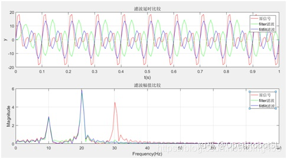

Home
本文转载自： https://zhuanlan.zhihu.com/p/269583408
matlab的滤波函数filter与filtfilt比较
摘要
滤波器应用非常广泛，例如根据位置数据对机器人速度和加速度进行估计时，差分运算会放大噪声，滤波环节是必不可少的。 filter滤波器称为一维数字滤波器。filtfilt滤波器称为零相位数字滤波。其滤波算法是基于filter而来的。只是filtfilt实现了零相位。其基本实现过程为先让信号用filter滤波，再将信号时域反转再次通过filter滤波，这样两次滤波后相位实现了零相位。filter滤波有明显的延迟，filtfilt几乎没有延迟。
filter与filtfilt函数比较
（1）设置三种频率(10Hz,20Hz,30Hz)构成的信号y1
f1=10;
f2=20;
f3=30;
Fs=150;
t=0:1/Fs:1;
y1=5*sin(2*pi*f1*t)+10*sin(2*pi*f2*t)+8*sin(2*pi*f3*t);（2）设计滤波参数，分别用filter滤波器和filtfilt滤波器把30Hz的信号滤掉。
%滤波
fp=25;%滤掉频率超过25Hz的信号
fs=40;
wp=2*fp/Fs;ws=2*fs/Fs;rp=0.1;rs=60; %DF指标（低通滤波器的通、阻带边界频）
[N,wp]=ellipord(wp,ws,rp,rs); %调用ellipord计算椭圆DF阶数N和通带截止频率wp
[B,A]=ellip(N,rp,rs,wp); %调用ellip计算椭圆带通DF系统函数系数向量B和A
y2=filter(B,A,y1); %滤波
y3=filtfilt(B,A,y1);（3）绘制滤波效果图和FFT频谱分析图，对比滤波效果。

如图所示，第1个时域图可以发现经过filter滤波的信号比原始信号明显有延迟，而经过filtfilt滤波后的信号几乎没有延迟。第2频谱图可以发现，按照设计的参数，两个滤波器都能把频率为30Hz的信号滤除了。 以上分析的完整matlab代码如下：
%滤波器比较
%%
%产生原始信号
close all
f1=10;
f2=20;
f3=30;
Fs=150;
t=0:1/Fs:1;
y1=5*sin(2*pi*f1*t)+10*sin(2*pi*f2*t)+8*sin(2*pi*f3*t);
%%
%滤波
fp=25;%滤掉频率超过25Hz的信号
fs=40;
wp=2*fp/Fs;ws=2*fs/Fs;rp=0.1;rs=60; %DF指标（低通滤波器的通、阻带边界频）
[N,wp]=ellipord(wp,ws,rp,rs); %调用ellipord计算椭圆DF阶数N和通带截止频率wp
[B,A]=ellip(N,rp,rs,wp); %调用ellip计算椭圆带通DF系统函数系数向量B和A
y2=filter(B,A,y1); %滤波
y3=filtfilt(B,A,y1);
%%
%FFT频谱分析，分析滤波前后的频率成分
N=length(y1);
nfft=2^nextpow2(N);
fft_y1=fft(y1,nfft)/nfft;
fft_y2=fft(y2,nfft)/nfft;
fft_y3=fft(y3,nfft)/nfft;
f=Fs/2*linspace(0,1,nfft/2);
%%
%绘图对比
subplot(2,1,1)
fig1=plot(t,y1,'r');
hold on
fig2=plot(t,y2,'g');
fig3=plot(t,y3,'b');
legend([fig1, fig2,fig3],'原信号', 'filter滤波','filtfilt滤波');
xlabel('t(s)');
ylabel('y');
title('滤波延时比较')
grid on
subplot(2,1,2)
fft_fig1=plot(f,2*abs(fft_y1(1:nfft/2)),'r');
hold on
fft_fig2=plot(f,2*abs(fft_y2(1:nfft/2)),'g');
fft_fig3=plot(f,2*abs(fft_y3(1:nfft/2)),'b');
legend([fft_fig1 ,fft_fig2,fft_fig3],'原信号', 'filter滤波','filtfilt滤波');
xlabel('Frequency(Hz)');
ylabel('Magnitude');
title('滤波幅值比较')
grid on## 参考资料 matlab filter函数滤波器系数设计
======================================================================
我的测试结果及程序
下面是我测试的代码：